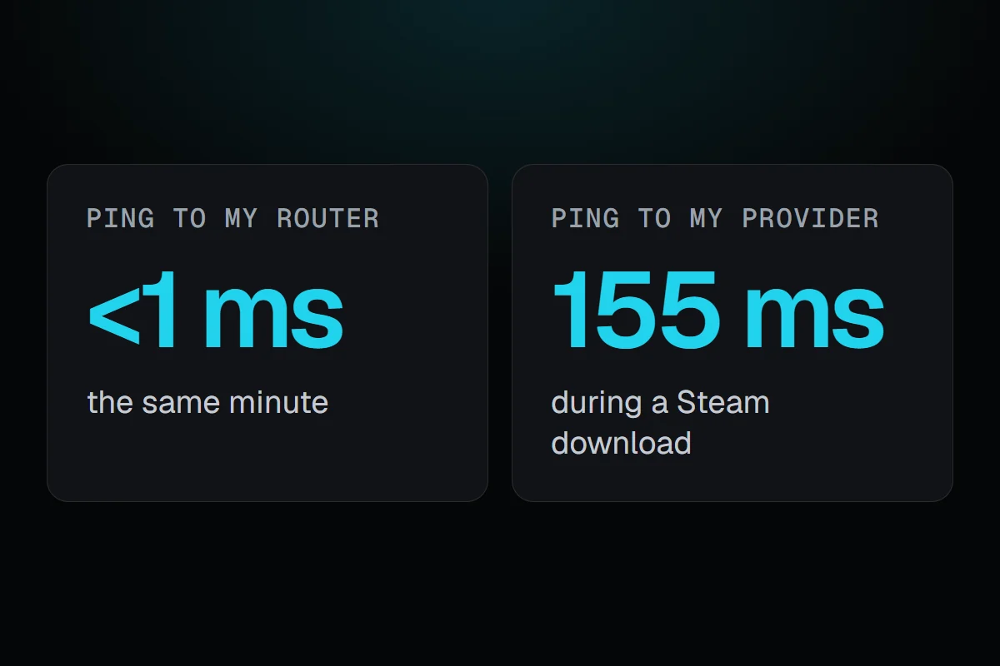

PC problems · Internet and screen time
Ping spikes while gaming, and the download behind mine
My ping to my internet provider jumped to 155 ms in the minute Steam pulled 175 MB, while my own router stayed under a millisecond. How RigSight shows where ping spikes while gaming start, why they happen, and how to fix them.

The short answer
Ping spikes while gaming usually come from something else filling your connection, like a launcher or Windows downloading in the background, or from Wi-Fi. Ping your router and something on the internet at the same time. If only the internet side spikes, pause downloads and uploads first. If your router spikes too, it's your Wi-Fi or cable.
On 5 November at 10:32 PM, RigSight's ping check to my internet provider's first router came back in 155 ms. A minute before it was 1 ms, and a minute after it was 1 ms again. My own router answered in under a millisecond the whole time. In that minute Steam pulled 175 MB, more than thirty times what it pulled the minute before. I wasn't in a game, but it's a common story behind ping spikes while gaming. Something else fills the connection, and the game's packets wait in line behind it.
How RigSight caught it
Since version 1.4.0, RigSight checks the line every 5 seconds in two places. One ping goes to your router, which is the home side of the line, your cable or Wi-Fi. The other goes to your internet provider's first router after it, which is the provider's side. RigSight finds that router the way a traceroute does, without asking any outside server. The pings leave from the network card itself, so a VPN in between doesn't hide the real line. A ping that isn't back within a second counts as lost.
Two pings at once tell you where a spike starts. If the router is slow, the problem is inside your home. If the router is quick and the provider's side is slow, the problem is on the line, at the provider, or in whatever is filling the line. On my PC the router never went past 3 ms in the 484 minutes of checks so far, and 4 of 5,767 pings to the provider got no reply.
The Network page shows it in a few places. Right now has your speeds, whether the connection is working well, its ping and packet loss, and every app using it. The graph of each hour has a Ping view, and any hour that went past 80 ms is marked, because that's where online games start to feel it. On a line that's never that fast, the mark starts at twice its usual. A sentence above the graph gives the usual ping and how many hours went past the mark. When the same app was uploading a lot in most of them, it names that app.
Mine was a download, so the sentence doesn't name it, but the hour does. Click the marked hour and Steam is at the top of its apps, with 334 MB downloaded. The second spike in my history was the same kind. At 7:16 AM on 6 November the provider's side hit 105 ms. In that hour Epic's installer pulled 292 MB and Ubisoft Connect 216 MB, and those two were the top of the list. Drag across the graph to zoom into a busy evening.
If the internet drops altogether, RigSight tells you when it went and when it's back, and a strip under the graph shows each drop. You can pause the ping checks under the graph or in Settings. Seeing each app's internet use needs RigSight running with admin rights. RigSight is free and open source.
Why ping spikes happen
Ping is how long one small packet takes to reach a place and come back. A game sends small updates many times a second, so when one waits, you see players jump or your shots land late. A speed test doesn't show this. It measures how much your connection can move, not how quickly one packet comes back.
These are the usual reasons for spikes.
- Something else fills the connection. A launcher updating a game, Windows Update, a cloud backup uploading photos, or someone streaming in another room can fill the line. Routers and modems can hold the extra traffic in a queue, and the game's packets wait in that queue too. Network researchers call this bufferbloat, and a ping during a big download is the classic way to see it.
- Wi-Fi is struggling. It shares the air with other networks and devices, and walls and distance make it resend packets. That shows as spikes on the home side, in pings to your own router.
- The route to the game server is busy or long. Busy hours on the networks in between can add delay, and a server in another region adds distance you can't remove.
- The provider's line has trouble. Spikes on the provider's side with nothing downloading, at any hour, point there.
How to find and fix ping spikes while gaming
- Find which side the spike is on. Open Command Prompt, type
ipconfigand note the Default Gateway, which is your router. Runping 192.168.1.1 -twith your router's address in one window, andping 1.1.1.1 -tin a second window. The-tkeeps it going until you press Ctrl + C. Play for a while and watch both. If both jump together, it's your Wi-Fi or cable. If only the second one jumps, it's the line or something filling it. - Stop background downloads while you play. In Steam, the setting for downloads during gameplay is under Settings > Downloads, and each game's Properties > Updates can override it. Check your other launchers for the same kind of setting.
- Cap Windows' own update downloads. Go to Settings > Windows Update > Advanced options > Delivery Optimization > Advanced options and set a limit for background downloads. Microsoft notes the limit only covers automatic update downloads, not ones you start yourself.
- Pause cloud backups and sync, like OneDrive or Google Drive, during a match. Uploads fill the line just as downloads do, and on many connections upload is much smaller.
- Try a cable. If pings to your router jump around, plug the PC into the router with Ethernet and test again. If you have to stay on Wi-Fi, move closer to the router or use its 5 GHz network.
- Look for a queue setting on your router. Some routers have a setting for this, often called QoS or Smart Queue Management. It keeps the queue short while something downloads, so game packets don't wait as long. Your router's manual says whether it has one.
- Restart the router, and update your network card's driver from the PC or motherboard maker.
- If the spikes happen in only one game, check which server region it puts you on. A closer region usually means lower ping.
- If the provider's side spikes with nothing else using the internet, write down the times and call your provider. A record of when it happened helps more than "my internet is bad".
Your next step is the two ping windows from the first step, left running during your next match. One look at which one jumps tells you whether to fix your Wi-Fi or your downloads.
Questions people ask
Why do I get ping spikes while gaming?
Often something else on your connection is downloading or uploading at the same moment, like a launcher update, Windows Update or a cloud backup, and the game's packets wait behind it. Wi-Fi trouble and a busy route to the game server are the other usual reasons. Pinging your router and the internet at once tells you which side it's on.
Why is my ping high in games but my internet is good?
A speed test measures how much data your connection can move each second. Ping is how long one small packet takes to get there and back. A fast connection can still have high ping when the game server is far away, the route to it is busy, or something else is filling the line while you play.
Are ping spikes worse on Wi-Fi than on Ethernet?
They can be. Wi-Fi shares the air with other networks and devices, and walls and distance make it resend packets. If pings to your own router jump around, try a cable. If the spikes happen on a cable too, look past your home network.
What does packet loss mean?
Packet loss means some packets never arrive. In a game it shows as rubber-banding or actions that don't register. A lost ping now and then is normal. RigSight only mentions it once 1% or more of its pings get no reply.